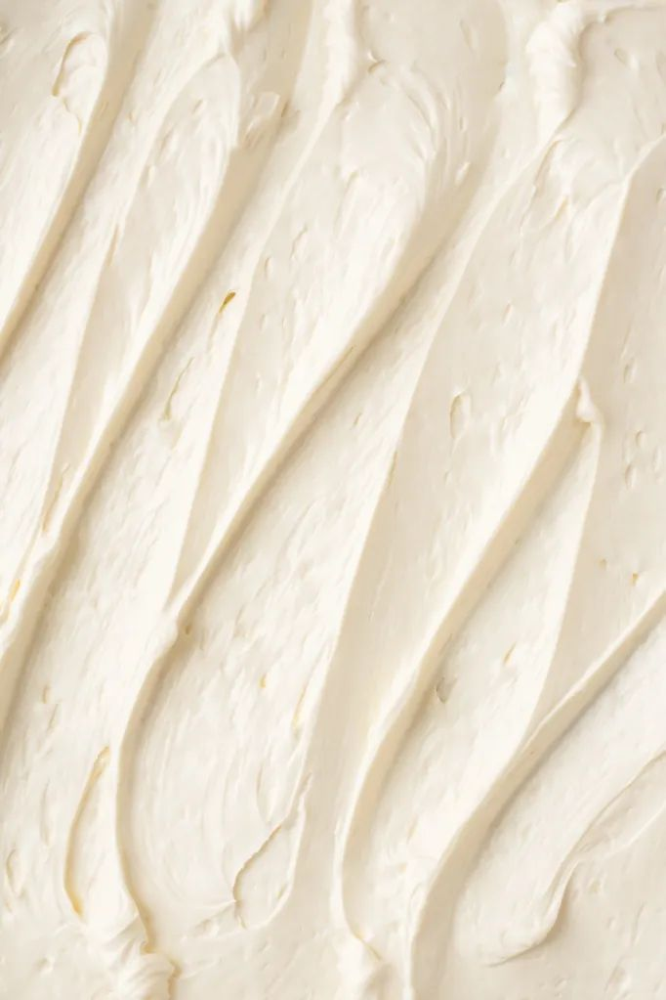
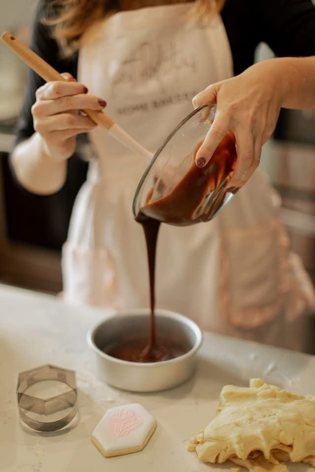
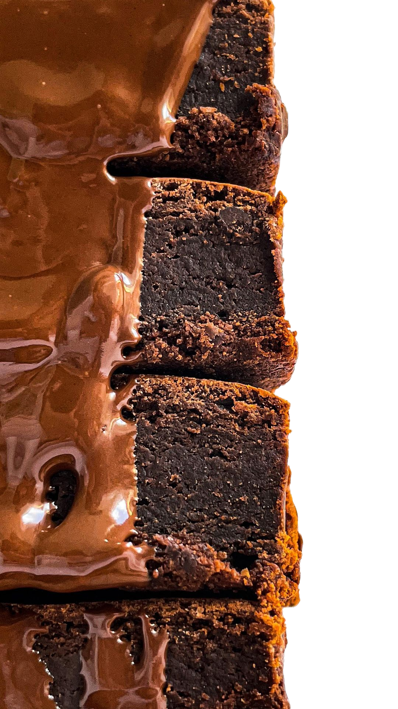
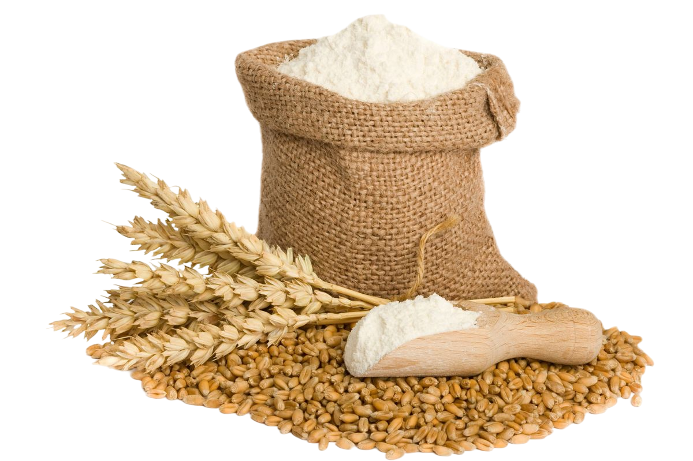
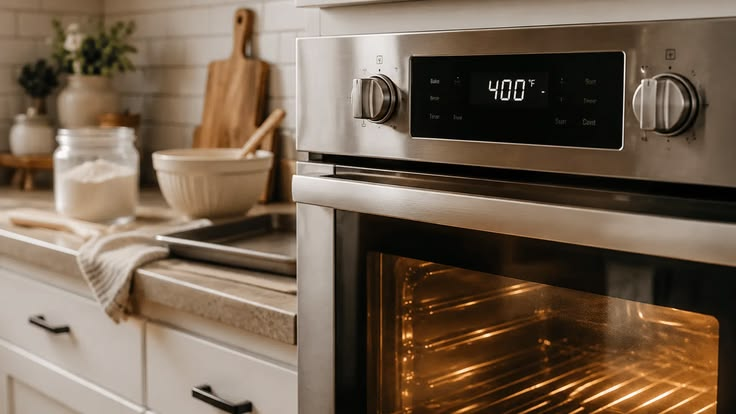
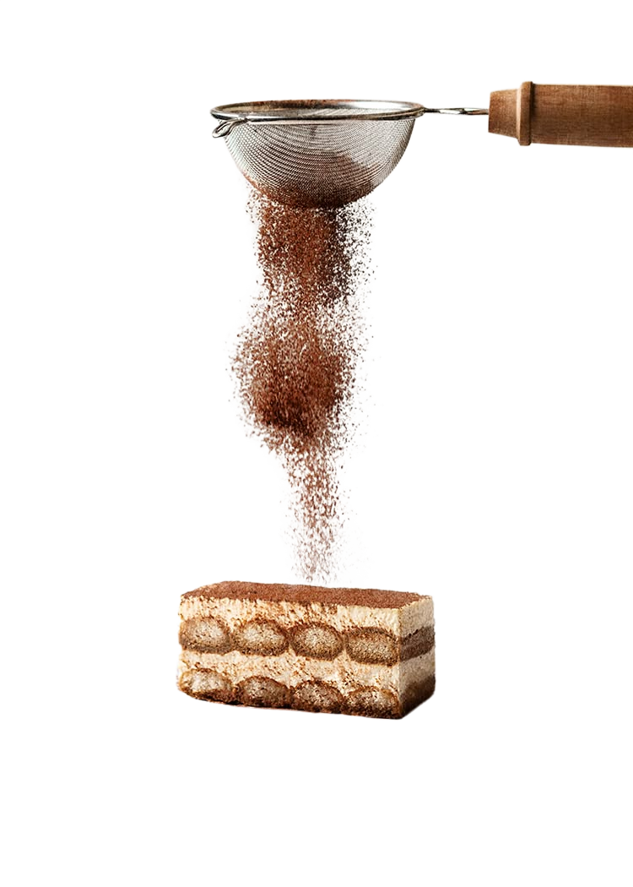

Læs opskriften først
Læs hele opskriften,
før du begynder.

Du behøver ikke vide alt om bagning. Start med nogle få grundlæggende ting.


Fire ting du skal vide først
Læs hele opskriften,
før du begynder.
De rigtige mængder
gør en forskel.
Sørg for, at ovnen har
den rigtige temperatur.
Dit første projekt
behøver ikke være perfekt.

For meget mel kan gøre dit bagværk tørt. Mål derfor altid melet præcist.

Den rigtige temperatur er vigtig. Husk at forvarme ovnen, før du begynder.

Start med en simpel opskrift. Du kan altid prøve sværere projekter senere.
Nu kender du det grundlæggende.
Du er klar til at finde det udstyr, du skal bruge.
Se hvad du skal bruge →